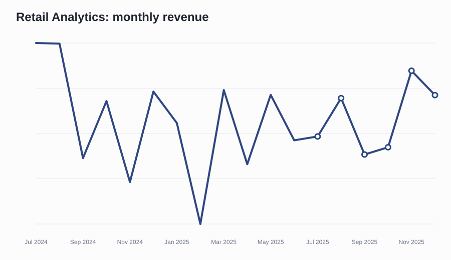
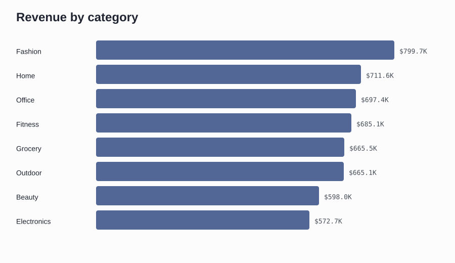
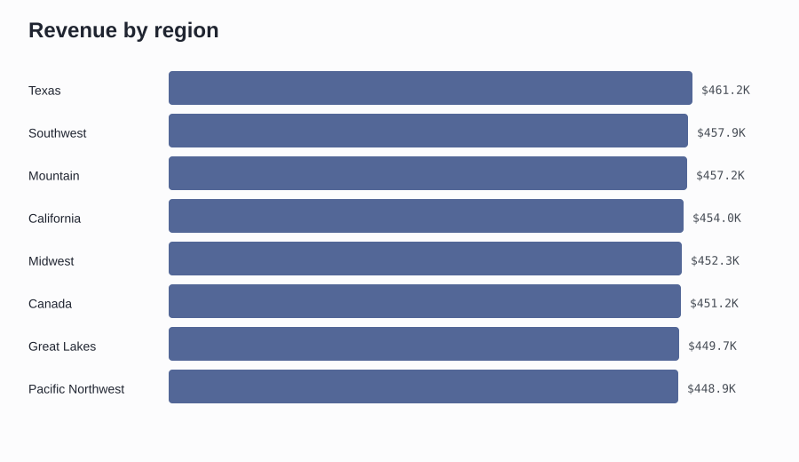
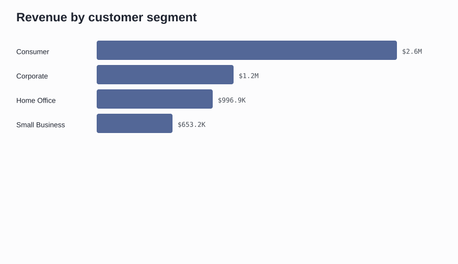
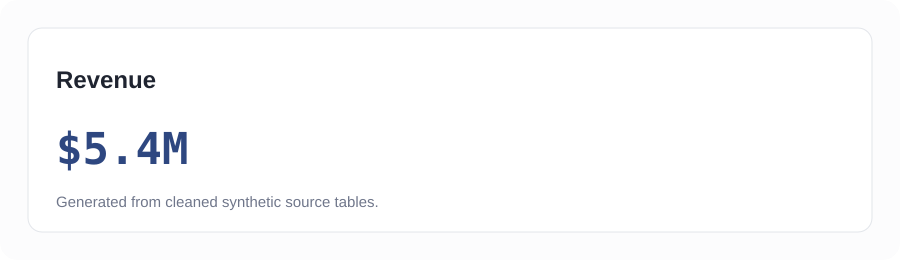
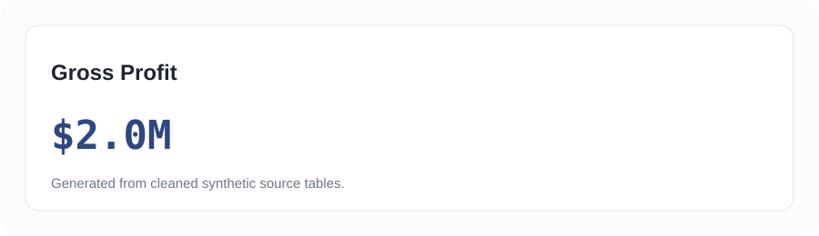

Executive Overview
Interactive Power BI build spec and local chart assets are mapped to this dashboard page.
Sales Analytics
Interactive Power BI build spec and local chart assets are mapped to this dashboard page.
Product Analytics
Interactive Power BI build spec and local chart assets are mapped to this dashboard page.
Customer Analytics
Interactive Power BI build spec and local chart assets are mapped to this dashboard page.
Regional Analytics
Interactive Power BI build spec and local chart assets are mapped to this dashboard page.
Marketing Analytics
Interactive Power BI build spec and local chart assets are mapped to this dashboard page.
Sources and methodology
Metrics reconcile to `data/cleaned` CSV files. SQL patterns, notebook analysis, and metric definitions are included in this repository.